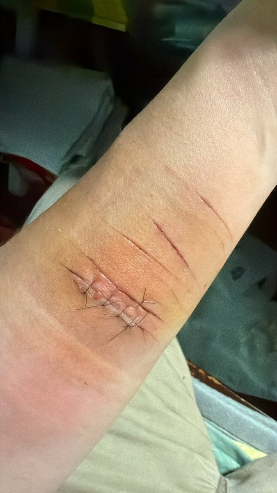

🐭老鼠国王
@KBDYD555
@Ayuyu629 我是12小时缝的,好啊我吃消炎药试试看宝宝你也好好消毒抱抱你

13d
@Ayuyu629
@KBDYD555 莫匹罗星软膏+头孢克洛 我是48小时之后才缝的 供你参考（但是超过8小时还没缝合感染风险就很大 ）
建议抗生素外敷内服 然后换药的时候一定注意抗菌灭菌 不要吝啬酒精碘伏生理盐水
最后肿胀太大快去医院做引流！ https://t.co/xXnG4xiJo7